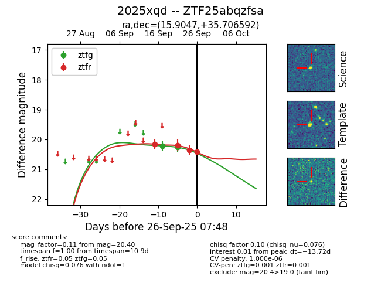
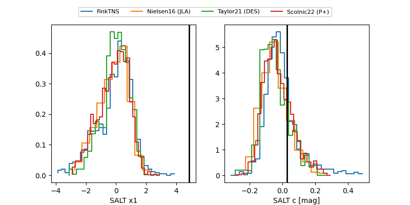

FINK: ZTF25abqzfsa
Lasair: ZTF25abqzfsa
ALeRCE: ZTF25abqzfsa
TNS: 2025xqd
YSE: 2025xqd
ZTF25abqzfsa (ztf,fink)
2025xqd (tns,yse)
equatorial (ra, dec) = (15.9047,+35.70659)
galactic (l, b) = (125.7094,-27.09946)


last ztfg=20.26, ztfr=20.40
2 ztfg, 4 ztfr detections